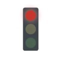
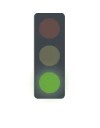

INVESTIGACIÓN
Busqueda de información de los semáforos
- ¿Cómo funciona un semáforo?
- ¿Cuál es el principal propósito de un semáforo?
- ¿Cómo se programan los semáforos?
- ¿Qué variedad de semáforos hay?
- Funciones
1.¿Cómo funciona un semáforo?
Los semáforos emiten señales usando luces de tres colores: el verde indica que se puede avanzar, el amarillo es una alerta para reducir la velocidad antes de pasar al rojo, color que indica que debemos detenernos.
2.¿Cuál es el principal propósito de un semáforo?
Los semáforos controlan y regulan el tráfico a través de colores, los semáforos además regulan el tránsito diario del tráfico rodado en las ciudades, ya sea para coches, para peatones, como para otro tipos de vehículos.
3.¿Cómo se programan los semáforos?
Se toma en cuenta si existe un vehículo o una persona en la calle solicitando el paso, para esto existen detectores que actúan como catalizadores de los cambios
¿Qué variedad de semáforos hay?
Existen semáforos para peatones y también para vehículos, que a su vez pueden ser circulares, cuadrados o reservados para algún transporte concreto, entre la abundante variedad de semáforos, hemos encontrado 4 tipos:
- Franja horizontal: prohibido el paso.
- Franja vertical: permite el paso de frente.
- Franja oblicua hacia la izquierda o derecha: permite el paso a izquierda o derecha.
- Franja oblicua intermitente: los vehículos que hemos mencionado deben detenerse como si se tratara de una luz amarilla fija.
1-Los semáforos peatonales:
Los semáforos reservados para peatones podemos encontrarlos con una luz roja no intermitente en forma de peatón inmóvil. Indica que estos no deben comenzar a cruzar la calzada. Bajo la luz roja, nos encontramos una luz verde no intermitente en forma de peatón en marcha. Indica que pueden comenzar a atravesar la calzada. Si es intermitente significa que el tiempo para cruzar está a punto de finalizar y que, en breve, se encenderá la luz roja
2-Semáforos circulares para vehículos:
Luz roja no intermitente: prohíbe el paso. Los vehículos no deben rebasar el semáforo ni, si existe, la línea de detención anterior al mismo. Si estuvieran dentro o al lado opuesto de una intersección, los vehículos no deben internarse en ésta ni, si existe, rebasar la línea de detención situada antes de ésta.
Luz roja intermitente o dos luces rojas intermitentes alternativamente: prohíben temporalmente el tránsito ante un paso a nivel, una entrada a un puente móvil o a un pontón transbordador, una salida de vehículos de extinción de incendios o una aproximación de una aeronave.

Luz amarilla no intermitente: indica que los vehículos deben detenerse en las mismas condiciones que si se tratara de una luz roja fija a no ser que, cuando se encienda, el vehículo se encuentre tan cerca del lugar de la detención que no pueda pararse con unas condiciones suficientes de seguridad.
Luz amarilla intermitente o dos luces amarillas intermitentes alternativamente: no prohíben el paso, pero exigen a los conductores extremar su precaución, ya que no eximen del cumplimiento de otras señales verticales que obliguen a detenerse o ceder el paso, o, en su ausencia, de obedecer las reglas generales sobre prioridad de paso.

Luz verde no intermitente: permite el paso con la excepción de que haya un atasco y podamos quedarnos bloqueados impidiendo el tránsito de los demás conductores o peatones que circulan de forma transversal.
Una flecha negra sobre una luz roja no intermitente o sobre una luz amarilla no cambia el significado de dichas luces, pero su acción se limita exclusivamente al movimiento indicado por la flecha. La flecha negra sobre luz roja da el alto sólo a los vehículos que sigan la dirección de la flecha, no a los demás vehículos. La flecha negra sobre luz amarilla intermitente indica precaución para los vehículos que sigan sólo la dirección de la flecha.
Una flecha verde que se ilumina sobre un fondo circular negro significa que los vehículos pueden tomar la dirección y sentido indicados por ésta, cualquiera que sea la luz que esté simultáneamente encendida en el mismo semáforo o en otro contiguo.
3-Semáforos cuadrados para vehículos o de carril:
Luz roja en forma de aspa: prohíbe ocupar el carril por lo que los conductores que vayan por éste deberán abandonarlo cuanto antes.
Luz verde en forma de flecha apuntando hacia abajo: permite circular por el carril en la que está encendida y no exime de la obligación de detenerse ante una luz roja circular o de obedecer cualquier otra señal que obligue a detenerse o a ceder el paso.

Luz blanca o amarilla en forma de flecha fija o intermitente: si apunta hacia abajo, en forma oblicua, indica a los usuarios del carril correspondiente la necesidad de irse incorporando en condiciones de seguridad al carril hacia el que apunta la flecha porque el carril va a quedar cerrado al tráfico.

4-Semáforos reservados a determinados vehículos:
Semáforo con silueta iluminada de un ciclo: se refieren exclusivamente a los ciclos y ciclomotores. Su significado por colores es el mismo que hemos contado unas líneas más arriba.

Semáforos para tranvías y autobuses de líneas regulares: tienen una franja rectangular iluminada sobre un fondo circular negro. En el caso de que exista un carril reservado para autobuses, taxis y otro tipo de vehículos, las indicaciones sólo harán referencia a los que circulen por él. Según la inclinación de la franja iluminada, el significado es diferente:

4.Funciones
1-Horizontal: Significado de las luces
roja: parar
amarilla: para ir reduciendo la velocidad.
verde: seguir
2-Vertical : Permitiendo el paso a los peatones
3-Oblicua: Indica que el paso sólo está permitido en el sentido que indica la franja.
4-Intermitente: Indica lo mismo que la luz ámbar o amarilla de los semáforos circulares